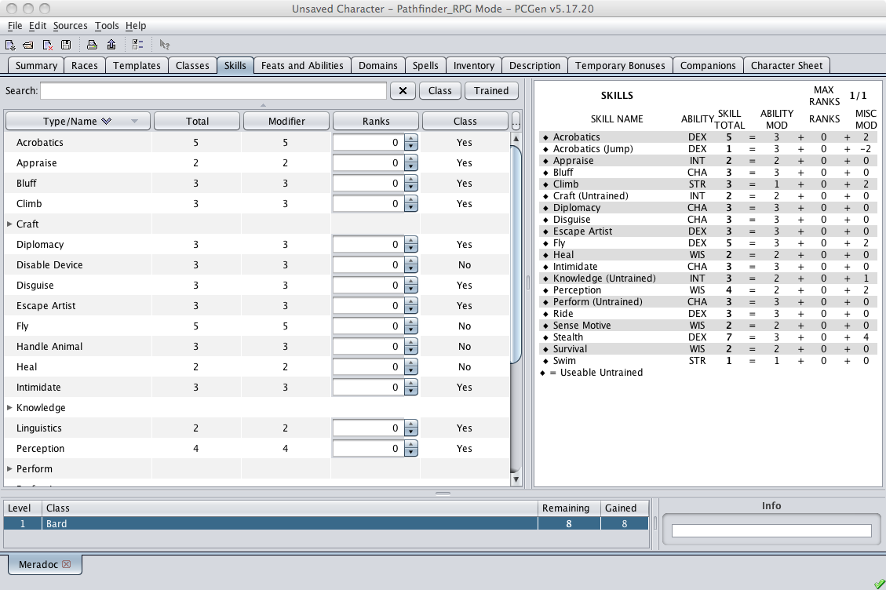

This is the Skill tab where the user selects what skills from the list of skills loaded from the sources that were chosen when first starting PCGen.

The table in the top left displays the name of the Skill, the total skill bonus, the skill modifier, the ranks taken by the character, and whether the skill is a class skill or not.
The table at the top right displays all the skills along with useful bits of information about them such as:
A Cost of 0 means that you cannot purchase this skill unless in the Options tab a non-zero cost to these exclusive skills (usually the value is 4 or higher) were assigned.
Once the skill has been selected, right click on the Skill and select any of the following:
The bottom right hand window displays skill information on the PC.
The Include drop down menu allows the user to select what types of other Skills to display:
Total Skill points left is the number of Skill points left to be chosen by the user to add Skill points to the PC. When this number reaches 0, no more skill points are left to be added for the PC.
Skill points left for class drop down menu displays how many Skill points are available for each class that the PC has. If the PC has multiple classes than the drop down menu allows the user to choose which class to add appropriate Skill points for.